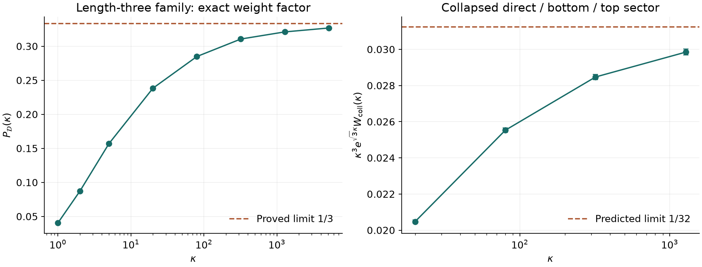

Eliminating patch variables: what is now proved
An exact physical weight
and a missing family stratum
The displayed length-three family has a patch-free, exact specular-itinerary weight. It is a Bessel factor times an explicit Gaussian-bridge probability. A second sector proves that collapsed nets must also enter the geometric classification.
01 / The actual reflecting domain
Operator and observable stay fixed
Set \(a=(1,0)\), \(b=(1/2,\sqrt3/2)\), \(\Omega=\operatorname{conv}\{0,a,a+b,b\}\). Use the nonnegative Neumann Laplacian \(h=-\Delta_N\), its resolvent kernel \(G_\kappa\), and the observable
The spectral data include eigenfunction triple products as well as eigenvalues. This is not the spectrum of a newly identified fixed many-body Hamiltonian. Its positive two-coordinate trace realization is given on the operator page.
02 / No auxiliary patches
The physical length-three sector
Number the sides counterclockwise from the bottom: bottom, right, top, left. The three itineraries are direct, bottom then left, and right then top. With \(R\) rotation through \(2\pi/3\), their unfolded displacements are
Let \(\mathcal D\subset\Omega^2\) be the chamber where both reflected paths hit those finite side interiors in that order. This is a condition on the actual billiard rays; it includes no cutoff functions. Put \(g_\kappa(r)=K_0(\kappa r)/(2\pi)\), and define the weight of this single labeled, oriented ray chamber by
The factor \(P_{\mathcal D}\) is the following completely specified probability. It uses the actual finite-wall visibility test, not an unknown boundary kernel.
- Draw \(s=(s_0,s_1,s_2)\) uniformly on the simplex \(s_i>0\), \(\sum s_i=1\).
- Independently draw \(T>0\) with normalized density
\[ f_\kappa(T)=\frac{2\kappa^2}{9K_2(3\kappa)}\,T\exp\!\left(-\kappa^2T-\frac9{4T}\right). \]
- Draw two jointly Gaussian planar vectors with means \(s_0c,s_1c\) and covariance
\[ \operatorname{Cov}(z_0,z_1)=2T\begin{pmatrix}s_0(1-s_0)I&-s_0s_1I\\-s_0s_1I&s_1(1-s_1)I\end{pmatrix}. \]
- Set \(u=(I-R^2)^{-1}(z_0-R^2z_1)\), \(v=z_1+Ru\). Then \(P_{\mathcal D}(\kappa)=\Pr((u,v)\in\mathcal D)\).
Exact finite-wall visibility test
For a word \(w\), start at \(u\) toward its unfolded image \(A_wv+b_w\), with unit direction \(e\) and remaining length \(L\). For each prescribed side with outward unit normal \(n_j\) and equation \(n_j\cdot x=c_j\), compute
Require \(n_j\cdot e>0\), \(0<\tau<L\), and \(p\) strictly between that side's vertices. Replace \(x\) by \(p\), \(L\) by \(L-\tau\), and \(e\) by \(e-2(n_j\cdot e)n_j\). After the last reflection require \(x+Le=v\). Convexity ensures that each segment between these successive finite-wall hits lies inside the rhombus. Boundary equalities have measure zero. The full four-dimensional chamber is generally semialgebraic; it is not assumed to be a polytope.
03 / An exact weight is more than area
Proof and limiting family measure
Rotate the displacements separately: \(z_0=R^2d_0\), \(z_1=Rd_1\), \(z_2=d_2\). Then \(z_0+z_1+z_2=c\), and the linear change of variables has Jacobian \(du\,dv=\tfrac13\,dz_0\,dz_1\). Therefore the same integral over all endpoint pairs in \(\mathbb R^4\) is
Insert \(g_\kappa(z)=\int_0^\infty(4\pi t)^{-1}e^{-\kappa^2t-|z|^2/(4t)}dt\) into this positive integral. Write the three times as \(t_i=Ts_i\), condition their Gaussian increments to sum to \(c\), and normalize. This gives exactly the probability law above. Restriction to \(\mathcal D\) proves the boxed formula by Tonelli's theorem.
In the stationary limit the actual embedded family is
At the bridge means, \(x=\tfrac32(s_0+s_1)\), \(y=\tfrac{\sqrt3}2(s_1-s_0)\). The finite-wall test becomes precisely \(s_0<s_1\) and \(s_0<s_2\): the direct edge is shortest. This event has probability \(1/3\).
For the first limit, \(\mathbb E[T]=\tfrac3{2\kappa}K_3(3\kappa)/K_2(3\kappa)\to0\); hence the bridge fluctuations vanish in probability. The chamber boundary at the means has simplex measure zero, so bounded convergence in probability gives \(1/3\). Bessel asymptotics give the displayed weight. For the last limit, the physical endpoint domain is bounded and the logarithmic singularities of the three kernels are integrable; Hölder's inequality yields \(W_{\mathcal D}=O((1+|\log\kappa|)^3)\). The unrestricted factor is asymptotic to \(1/(24\pi\kappa^4)\), so their ratio tends to zero.
Thus the continuum measure gives a leading coefficient, but cannot be the entire exact finite-parameter weight of this physical specular sector. This does not rule out cancellations with other sectors in a future full trace formula.
04 / A necessary addition to the index set
A ray sector with no genuine theta net
Consider the three words direct, bottom reflection, top reflection, and put \(H=\sqrt3/2\). Their displacements are
The physical chamber is nonempty: \(u=(0.7,0.4)\), \(v=(0.8,0.4)\) have bottom and top hits at horizontal coordinate \(0.75\), on both finite walls. However, all three outgoing horizontal components have the sign of \(v_x-u_x\). Force balance at \(u\) therefore requires \(v_x=u_x\). The three nonzero unit directions would then be collinear, and three collinear unit vectors cannot sum to zero. There is no noncollapsed equal-weight theta net in this chamber.
Equality holds on the limiting stratum \(u=v=(x,y)\), \(1/2<x<1\), \(0<y<H\). The direct edge has zero length; the other edges are the vertical bottom and top reflection loops. No corner is involved.
The inequality follows from \(|d_b|\geq u_y+v_y\), \(|d_t|\geq2H-u_y-v_y\), and \(|d_0|\geq0\). Equality requires a collapsed direct edge, and the two vertical wall hits are interior precisely on the stated strip. This exhibits a geometric stratum that a classification by noncollapsed theta nets and corner-diffractive nets alone would omit.
A local asymptotic calculation predicts, per labeled chamber,
The proposed coefficient comes from \(\int_{\mathbb R^2}g_\kappa(|v-u|)\,d(v-u)=\kappa^{-2}\), the product of the two large-distance Bessel factors, strip width \(1/2\), and \(\int_0^H[y(H-y)]^{-1/2}dy=\pi\). The numerical check below supports this limit. Uniform control near the strip endpoints is not supplied here, so this coefficient is a prediction rather than one of the proved theorems.
05 / Explicit weights for local strata
The flat-edge coefficient can be evaluated
Any complete trace formula must also account for zero-length local terms. Scaling the plane model gives the bulk density \(c_{\rm bulk}\kappa^{-2}\), where
For a flat Neumann wall let \(a=g_1(\sqrt{t^2+(h-k)^2})\), \(b=g_1(\sqrt{t^2+(h+k)^2})\), with \(h,k>0\). After subtracting the plane bulk term, the deficit from \(a^3\) cancels \(b^3\). The remaining edge density is
This is the exact half-plane excess per unit boundary length; scaling gives \(c_{\rm edge}\kappa^{-3}\). It is not an exact expression for all finite-domain boundary corrections.
Positive-integral evaluation
Insert the three positive heat-time representations. For the two direct factors let \(A=1/t_1+1/t_2\); for the image factor let \(C=1/t_3\). Integration over the horizontal displacement gives \(2\sqrt\pi/\sqrt{A+C}\); integration over the positive vertical quadrant gives \(2\arctan\sqrt{A/C}/\sqrt{AC}\). For the complementary term interchange \(A,C\); the two arctangents sum to \(\pi/2\). Set \(t_i=Ts_i\) and integrate \(T\). With \(U=s_1s_2+s_2s_3+s_3s_1\), the result is
For the middle equality use \(s_1=rt\), \(s_2=r(1-t)\), and integrate \(r\) first. The last integral is elementary after \(t=(1+\cos\theta)/2\). All integrations before the elementary substitutions have positive integrands, so their interchanges need no conditional summation prescription.
06 / What still separates this from the requested formula
The unproved global resummation
The actual obtuse-corner weight is already explicit in the exact Neumann wedge formula. Its geometric and diffractive pieces cancel each other's jumps at optical boundaries. A global formula must preserve these paired cancellations through repeated corner encounters, then group the three propagators by maximal stationary families and their collapsed or corner limits.
The missing theorem is convergence of that intrinsic global expansion in a norm strong enough to justify the cubed-kernel integral, together with a consistent summation prescription at optical boundaries. Convergence of the auxiliary patch series does not prove this. The single-sector identity above eliminates its patch variables but does not establish that theorem.
Hannay and Thain's exact straight-reflector scattering construction is a relevant candidate for the physical corner-path expansion; its Appendix C convergence argument concerns the slit case, not the full rhombus grouping needed here. The polygonal trace corrections of Bogomolny, Pavloff, and Schmit address the delicate family/diffraction transitions semiclassically. Neither is being used here as a proof of the requested exact family identity.
The necessary geometric index set now includes genuine theta families, positive-length collapsed strata, corner-diffractive strata, and the local bulk/edge/corner terms. An explicit scalar weight for every such stratum of the full reflecting rhombus has not been obtained.
07 / Reproducible evidence
Physical visibility, not unrestricted images

| \(\kappa\) | \(P_{\mathcal D}\) | Estimated standard error | Weight / leading term |
|---|---|---|---|
| \(1\) | \(0.040562\) | \(0.000385\) | \(0.20776\) |
| \(5\) | \(0.157009\) | \(0.000711\) | \(0.53158\) |
| \(80\) | \(0.284912\) | \(0.000882\) | \(0.86143\) |
| \(1280\) | \(0.321072\) | \(0.000912\) | \(0.96369\) |
| \(5120\) | \(0.326805\) | \(0.000916\) | \(0.98054\) |
The stationary chamber characterization was checked at \(1000\) independently drawn simplex points. Direct three-dimensional quadrature of the edge integral at orders \(32,64,128\) gives \(0.02144229,0.02155562,0.02157684\), approaching the exact coefficient \(0.02158122\). This is a convergence check, not an interval certificate.
The bounded probability estimates admit a simultaneous Hoeffding half-width \(0.003752\) with confidence at least \(99\%\) for the eight sampled parameters, under ideal independent sampling. The weighted collapsed-sector estimates do not inherit that bounded-indicator guarantee. Pseudorandom sampling and numerical quadrature are not rigorous error enclosures.